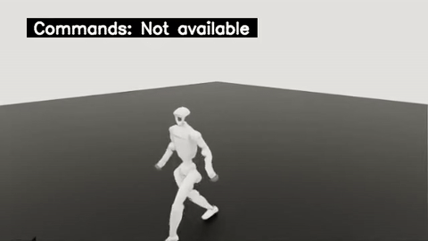
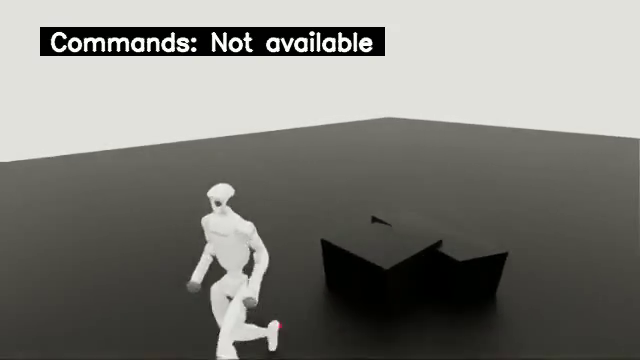
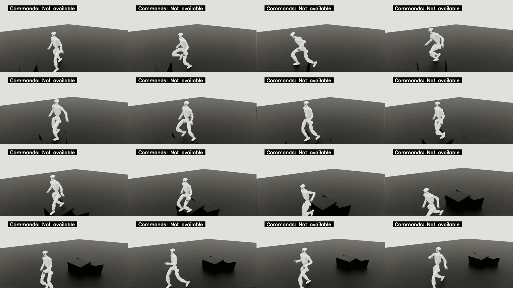

完整低台阶动作原片 10.08s
原 MP4 下载 · SHA256 f7220a6e6014daed278726148b57407ff8a02e97f2c589562e96b0c394e2fa89
teacher low-step，seed42，单 source / 单 terrain variant / first attempt。原 trajectory 505 帧、503 个连续 policy steps，failed reset 0、timeout reset 0；原轨迹到达 native boundary。
画面可见抬腿经过黑色台阶、继续行走后停稳；跟随视角存在遮挡，接触和完整越障不单独宣称。完整 888 队列与障碍课程质量仍待终态验收。本包不给出完整队列比例。
原叠字 Commands: Not available 保留；source 完成判定来自原始 trajectory。



原 MP4 下载 · SHA256 f7220a6e6014daed278726148b57407ff8a02e97f2c589562e96b0c394e2fa89
原 MP4 下载 · SHA256 39cf962a0cfeba1da4f85b6e8f534ad99ff7b6cc49e4615f495fb7ba8838d494
原 MP4 下载 · SHA256 a85fa283a1c0112943d03b9483fd1300451c80c5fde7b3037318a3cb7e9e5ce8